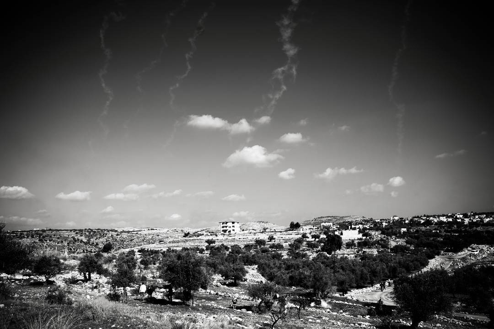
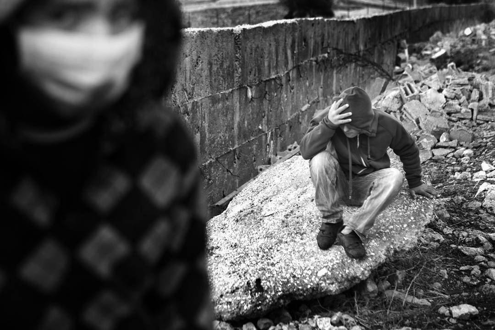
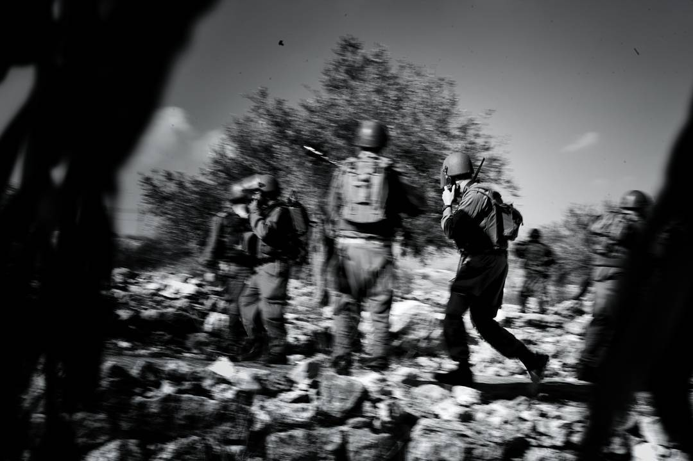
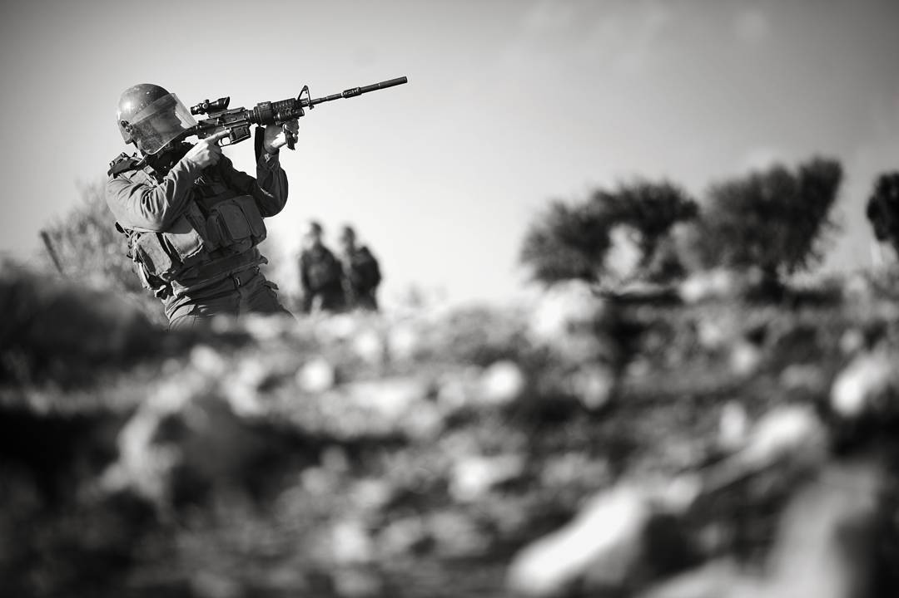
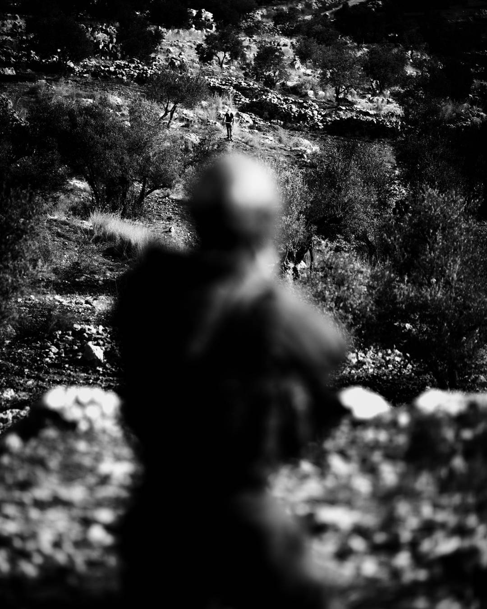
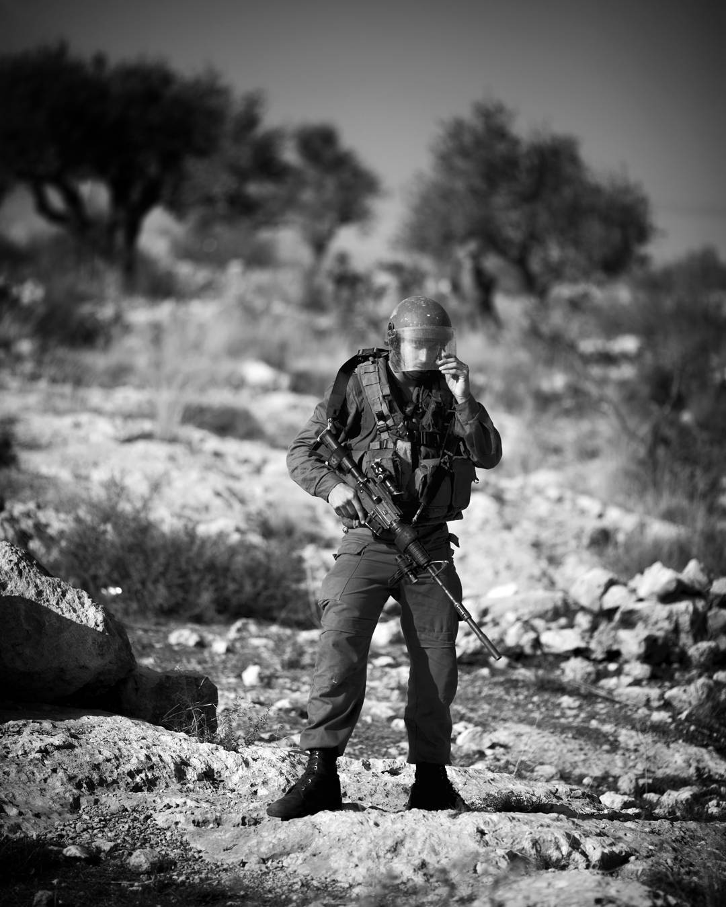
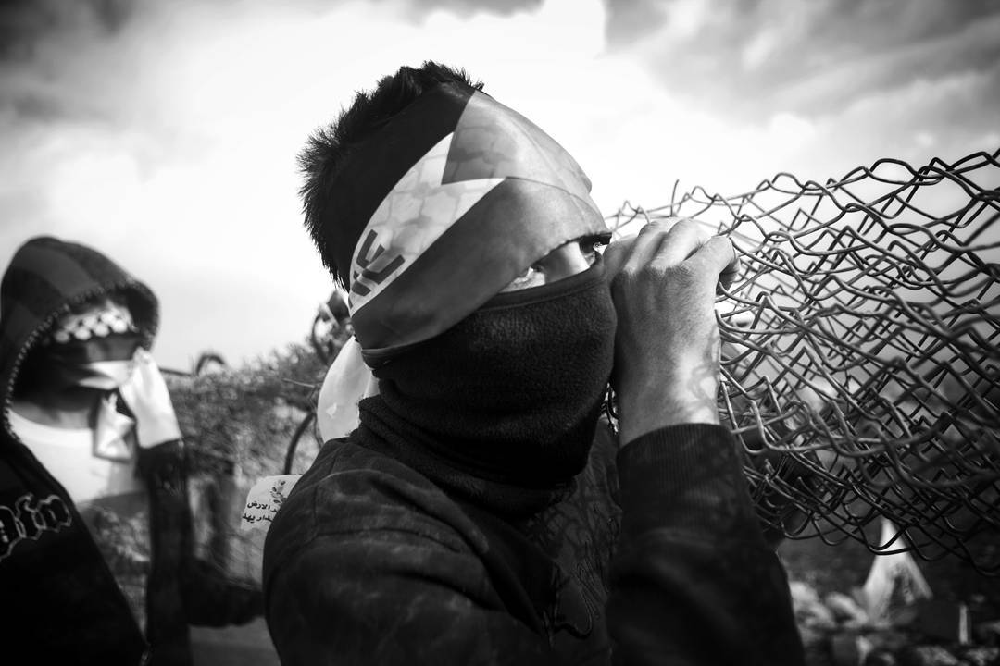
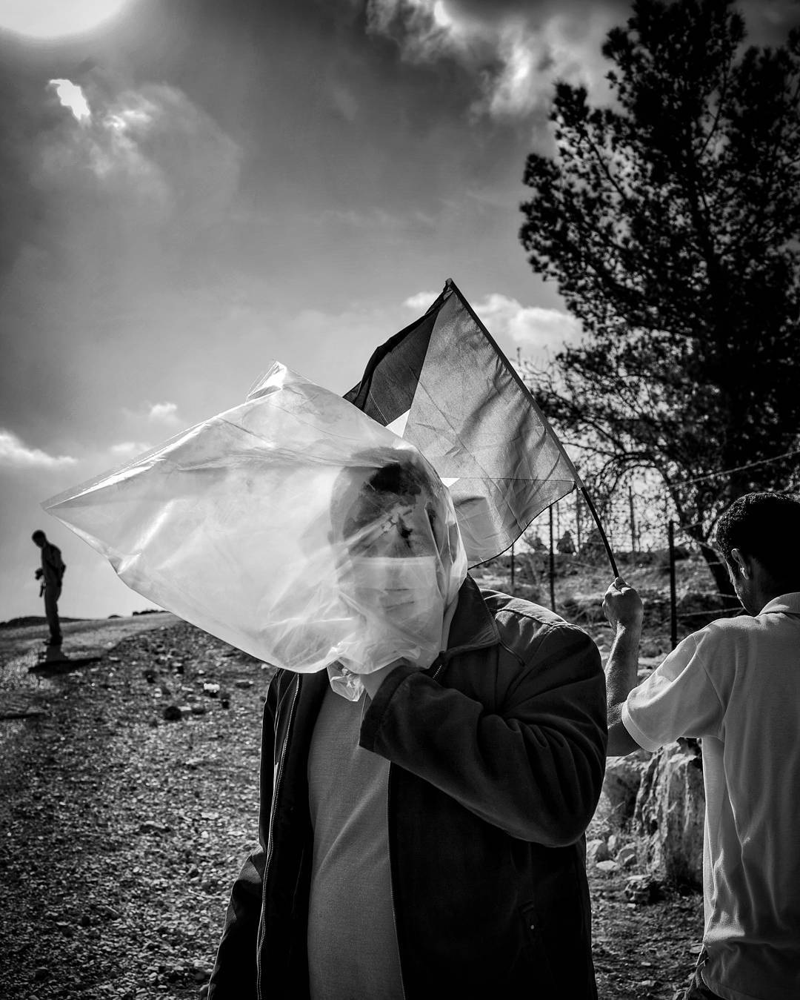
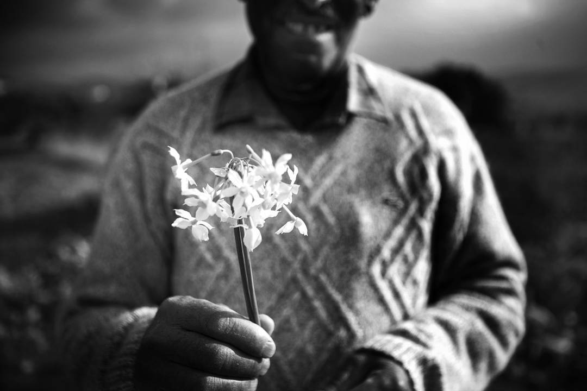

Since 2005 weekly protests have occured in the Palestinian town of Bil'in in the West Bank. Second image of a series of photos from 2011

Tear gas trails down near the Palestinian town of Bil'in in the West Bank. Protestors, hiding behind trees, were throwing rocks at IDP soldiers at the border fence. Third image of a series of photos from 2011

Protestors seeking protection from tear gas near the Palestinian town of Bil'in in the West Bank. Protestors were having a regularly scheduled protest throwing rocks at IDP soldiers at the border fence. Forth image of a series of photos from 2011

IDF soldiers scramble in response to protestors having a regularly scheduled protest throwing rocks at IDP soldiers at the border fence. Fifth image of a series of photos from 2011

Taking aim, but not firing an IDF soldier seeks to quiet a crowd of protestors near the Palestinian town of Bil'in in the West Bank. Protestors were having a regularly scheduled protest throwing rocks at IDP soldiers at the border fence. Sixth image of a series of photos from 2011

Taking aim at a protestor seen just above his helmet, but not firing, an IDF soldier seeks to quiet a crowd of protestors near the Palestinian town of Bil'in in the West Bank. Protestors were having a regularly scheduled protest throwing rocks at IDP soldiers at the border fence. Seventh image of a series of photos from 2011

A moment of quiet for an IDF soldier near the Palestinian town of Bil'in in the West Bank. Protestors were having a regularly scheduled protest throwing rocks at IDP soldiers at the border fence. Eigth image of a series of photos from 2011

Claiming to have torn down another section of the wall, protestors carry it to throw at the IDF soldiers protecting the wall near the Palestinian town of Bil'in in the West Bank. Protestors were having a regularly scheduled protest throwing rocks at IDP soldiers at the border fence. Ninth image of a series of photos from 2011

Using an improvised gas mask a protestor stands near the Palestinian town of Bil'in in the West Bank. Protestors were having a regularly scheduled protest throwing rocks at IDP soldiers at the border fence. Tenth image of a series of photos from 2011

Ending the protest photos here, it's important to understand the theatrical quality of both sides participating. Even the kind gesture of offering me flowers for my bullet proof vest is not without a sense of context and also genuine appriciation for journalists who's simple presence gives the elaborately set stage an audience. Eleventh and final image of a series of photos from 2011